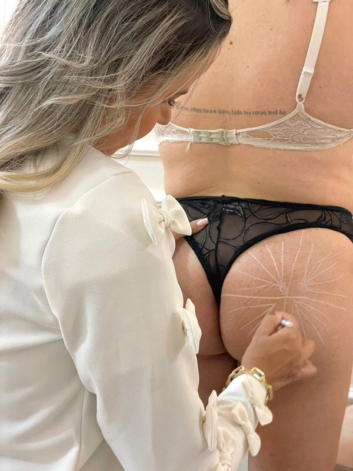
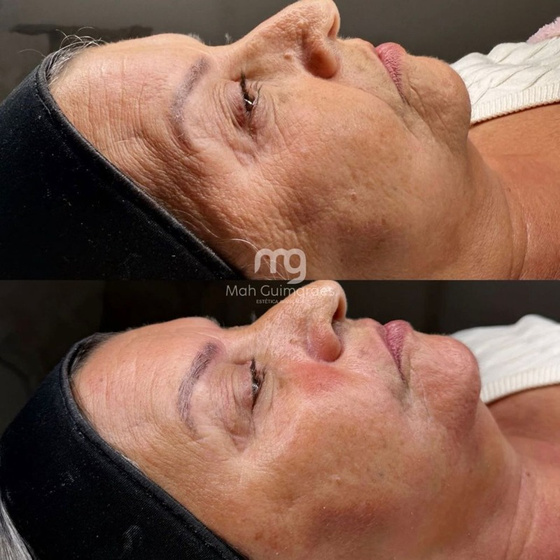
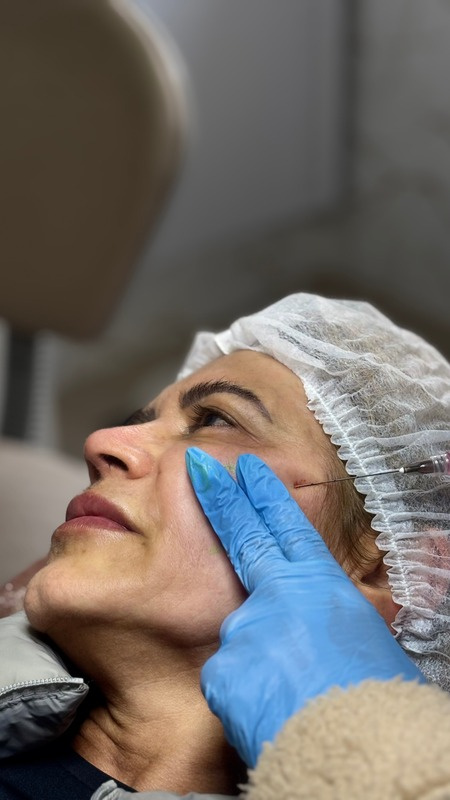
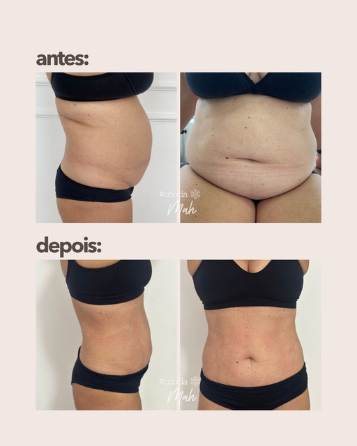
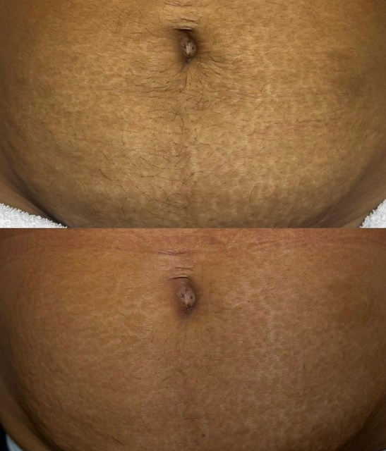
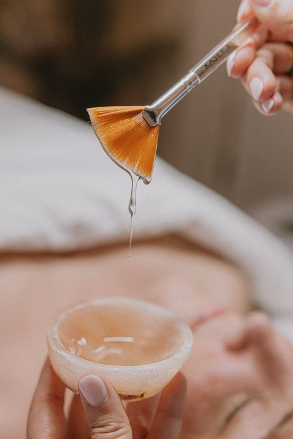

O que fazemos
Cada procedimento começa com uma avaliação. O que você vai fazer é definido junto com você — não antes de te conhecer.

Harmonização Glútea
Volume, contorno e sustentação com técnica trabalhada a fundo e resultado proporcional ao seu corpo.

Harmonização Facial
Equilíbrio dos traços respeitando a sua identidade. Natural de verdade — ninguém precisa saber que você fez.

Botox (Toxina Botulínica)
Suaviza linhas de expressão sem congelar o rosto. Você continua com a sua cara — com menos marcas de cansaço.

Criolipólise
Redução de gordura localizada sem cirurgia, sem corte e sem afastamento da rotina.

Método MAF
Protocolo próprio para inchaço e retenção de líquido, com foco na região abdominal.

Método R.A.R. — Estrias
Protocolo próprio de regeneração da pele para tratamento de estrias.

Limpeza de Pele e Enzimas
Cuidado de manutenção que sustenta todo o resto. A base de qualquer protocolo que dura.
Também realizamos bronzeamento e outros protocolos corporais. Fale conosco para a lista completa.